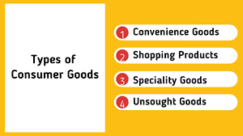

The Indian government has reopened applications for the PLI scheme for air conditioners and LED lights,
allowing companies to invest more in manufacturing key components. With an outlay of ₹6,238 crores, the scheme,
running from FY22 to FY29, aims to boost domestic production. Major firms like Voltas and Daikin are considering
new investments.
Govt reopens application window for PLI scheme for ACs, LED lights for 90 days6 Hours ago
Indians like to have a swig of premium beer20 Hours ago
RCB's fours and sixes lift United Spirits' scorecard in FY249 Hours ago
PC Jewellers gets PNB approval for one-time settlement of duesJul 7, 2024
FMCG makers expect single-digit revenue growth, margin improvements in April-June quarterJul 7, 2024
Online discounts to rain heavy from July, ease dry spell of electronics, apparel cosJul 7, 2024
Types of products
Consumer Products
Industrial Products
Service Products
Consumer Products
A consumer product is a finished product available for sale to a customer. There's a wide range of consumer products, and in marketing, they're typically divided into different types.
- Convenience products
- Specialty products
- Shopping products
- Unsought products
Regarding: Guide to Product Development
Industrial Products
Businesses usually purchase an industrial product to make other products or to help them with running their business. An item that would be a consumer product if a customer bought it, such as cleaning supplies, may become an industrial product if a business buys it.
There are several types of industrial products:
- Capital goods
- Raw materials
- Component parts
- Major equipment
- Accessory equipment
- Operating supplies
Regarding: Guide to Product Development
Industrial products refer to those products that are used as inputs for the production of other goods.
Such goods are not meant for final consumption rather they are used as raw material and inputs by the manufacturers
for the production of consumer goods. For example, machines, tools etc. are industrial products.
Industrial products refer to those products that are used as inputs for the production of other goods.
Such goods are not meant for final consumption rather they are used as raw material and inputs by the manufacturers
for the production of consumer goods. For example, machines, tools etc. are industrial products.
Service Products
Service products are business offerings that are either a pure service or a core service. A pure service is a service without a tangible result, such as education, while a core service has a tangible result, like cleaning services. Some product categorizations place service products under industry products, but they can be their own type of product because many are available to consumers directly.